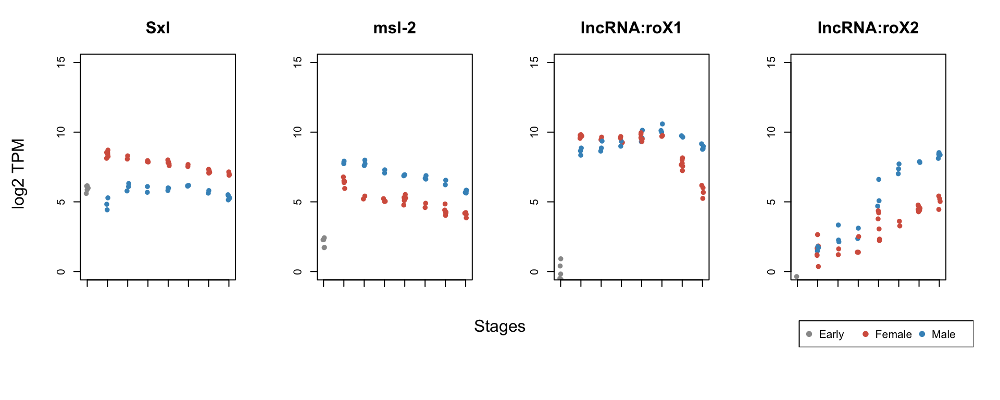

# do not run here
module load ngs/STAR/2.5.3a
module load ngs/samtools
### STAR index directory ###
STAR_INDEX="../genome/STAR_dmel-all-chromosome-r6.17"
### GTF file ###
GTF_FILE="../genome/dmel-all-r6.17.gtf"
# STAR run
STAR \
--runThreadN 8 \
--readFilesCommand gunzip -c \
--quantMode GeneCounts \
--genomeDir ${STAR_INDEX} \
--sjdbGTFfile ${GTF_FILE} \
--readFilesIn ${FILEBASE}_1.txt.gz ${FILEBASE}_2.txt.gz \
--outFileNamePrefix ${FILEBASE}. \
--outSAMtype BAM SortedByCoordinate \
--limitBAMsortRAM 5000000000 \
--outFilterMultimapNmax 1library(AnnotationDbi)
library(GenomicFeatures)
txdb = loadDb("data_Kmeans/txdb")
my_exons <- exons(txdb)
exons.list.per.gene <- exonsBy(txdb, by="gene")
exonic.gene.sizes <- sum(width(reduce(exons.list.per.gene))) / 1000
head(exonic.gene.sizes)## FBgn0000003 FBgn0000008 FBgn0000014 FBgn0000015 FBgn0000017 FBgn0000018
## 0.299 5.414 5.477 11.791 12.819 1.794# read data from text file
my_counts <- read.table("data_Kmeans/count_table.txt", header = T, row.names = 1)
my_counts[1:6,1:8]## E1B E1C E1D E1G E1H E2B E2C E2D
## FBgn0000003 76 15 23 23 12 68 22 14
## FBgn0000008 1395 676 875 699 439 34 23 19
## FBgn0000014 1 0 0 0 1 88 34 47
## FBgn0000015 0 0 0 0 2 19 19 11
## FBgn0000017 4222 2186 2614 2784 1523 2850 1718 2083
## FBgn0000018 908 364 515 278 253 36 15 19dim(my_counts)## [1] 17485 54# function to calculate TPM (see reference below)
countToTpm <- function(counts, effLen, scaler=1e6)
{
rate <- log(counts) - log(effLen)
denom <- log(sum(exp(rate)))
exp(rate - denom + log(scaler))
}# select genes
my_counts_Genes <- my_counts[grep("FBgn", rownames(my_counts)),]
# filter low counts
my_filter <- apply(my_counts_Genes, 1, function(x) length(x[x>20]) >= ncol(my_counts_Genes)/12)
my_counts_Filtered <- my_counts_Genes[my_filter,]
# match filtered genes and exonic gene sizes
my_genes_Filtered <- intersect(rownames(my_counts_Filtered), names(exonic.gene.sizes))
exonic.gene.sizes <- exonic.gene.sizes[names(exonic.gene.sizes) %in% my_genes_Filtered]
exonic.gene.sizes <- exonic.gene.sizes[order(names(exonic.gene.sizes))]
my_counts_Filtered <- my_counts_Filtered[rownames(my_counts_Filtered) %in% my_genes_Filtered,]
my_counts_Filtered <- my_counts_Filtered[order(rownames(my_counts_Filtered)),]
# check whether names are identical
stopifnot(identical(rownames(my_counts_Filtered), names(exonic.gene.sizes)))
# calculate TPM
my_TPM <- apply(my_counts_Filtered, 2, FUN = function(x){countToTpm(x, exonic.gene.sizes)})
# take log
log2_TPM <- log2(my_TPM+0.5)
log2_TPM[1:6,1:6]## E1B E1C E1D E1G E1H E2B
## FBgn0000003 5.4913503 4.296149 4.656480 4.753028 4.3757731 6.23310042
## FBgn0000008 5.5107778 5.589526 5.712513 5.489284 5.3727542 1.35804085
## FBgn0000014 -0.9106273 -1.000000 -1.000000 -1.000000 -0.7559121 2.53083317
## FBgn0000015 -1.0000000 -1.000000 -1.000000 -1.000000 -0.7719412 0.04186372
## FBgn0000017 5.8614745 6.035190 6.045044 6.233035 5.9183222 6.20060925
## FBgn0000018 6.4770042 6.284183 6.535293 5.749910 6.1637671 2.82643640dim(log2_TPM)## [1] 8983 54library(org.Dm.eg.db)
# select well known sex-specific marker genes
my_favorite_genes <- c("Sxl", "msl-2" ,"lncRNA:roX1", "lncRNA:roX2")
names(my_favorite_genes) <- mapIds(org.Dm.eg.db, my_favorite_genes, "FLYBASE", keytype="SYMBOL", multiVals="first")
set.seed(99)
# k-means with k=3
kmeans_clusters <- kmeans(apply(log2_TPM[ rownames(log2_TPM) %in% names(my_favorite_genes), ], 1,
function(x){ (x-mean(x))/sd(x) }),3, nstart=25, iter.max=1000)
my_sexes <- factor(as.integer(kmeans_clusters$cluster))
head(my_sexes)## [1] 1 1 1 1 1 2
## Levels: 1 2 3# conditions
my_conditions <- factor(substr(colnames(log2_TPM),1,2))
# setup color
my_color_palette <- c("#999999", "#d6604d", "#4393c3")
par(mfrow=c(1,4), oma=c(4,2,0,2))
# iterate through marker genes
for(i in seq_along(my_favorite_genes)){
plotDots(log2_TPM[rownames(log2_TPM) == names(my_favorite_genes)[i],],
my_title = my_favorite_genes[i],
color_palette = my_color_palette,
color_groups = my_sexes,
conditions = my_conditions,
point_size = 0.8)
}
mtext(text = "Stages", side = 1, line = -2, outer = TRUE)
mtext(text = "log2 TPM", side = 2, outer = TRUE)
par(fig = c(0,1,0,1), mar=c(0,0,0,0), new = TRUE)
plot(0,0, xlab="", ylab="", xaxt="n", yaxt="n", bty="n", type="n" )
legend("bottomright", legend = c("Early", "Female", "Male"), pch = 19, col = my_color_palette, horiz = T)
Conclusions:
The dataset was generated by Tamas Schauer (LMU, BMC, Becker group)
Progressive dosage compensation during Drosophila embryogenesis is reflected by gene arrangement. Prayitno K, Schauer T, Regnard C, Becker PB. EMBO Rep. 2019 Aug;20(8):e48138. doi: 10.15252/embr.201948138. Epub 2019 Jul 9. PMID: 31286660
TPM calculation: https://haroldpimentel.wordpress.com/2014/05/08/what-the-fpkm-a-review-rna-seq-expression-units/